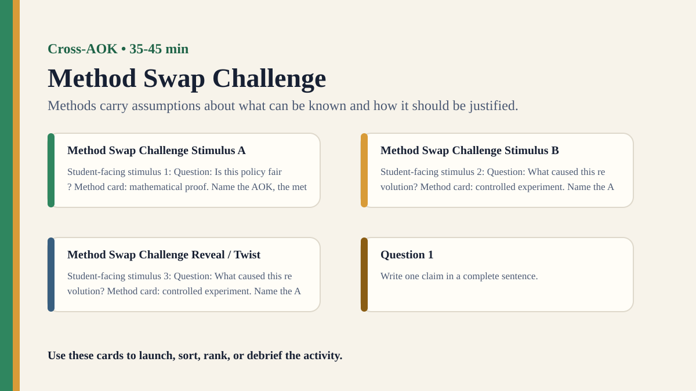

Premium draft resource
Method Swap Challenge Classroom Run Kit
Students apply one AOK's method to another AOK's question and evaluate what breaks, transfers, or improves.
One-Minute Teacher Brief
Students apply one AOK's method to another AOK's question and evaluate what breaks, transfers, or improves.
Big idea: Methods carry assumptions about what can be known and how it should be justified.
Student Prompt
Inspect Method Swap Challenge Stimulus A. Record one first claim, the evidence you used, your confidence, and what would make you revise.
Concrete Stimulus Packet
Stimulus
Method Swap Challenge Stimulus A
Student-facing stimulus 1: Question: Is this policy fair? Method card: mathematical proof. Name the AOK, the method being used, and the standard of evidence you would apply.
Students inspect this exact card first and commit to a claim before hearing anyone else.Stimulus
Method Swap Challenge Stimulus B
Student-facing stimulus 2: Question: What caused this revolution? Method card: controlled experiment. Name the AOK, the method being used, and the standard of evidence you would apply.
Use this for comparison, a second round, or a partner challenge.Stimulus
Method Swap Challenge Reveal / Twist
Student-facing stimulus 3: Question: What caused this revolution? Method card: controlled experiment. Name the AOK, the method being used, and the standard of evidence you would apply.
Teacher reveal: connect the changed response to the big idea — Methods carry assumptions about what can be known and how it should be justified.Actual Lesson Questions
| # | Question for students | Teacher key / cue |
|---|---|---|
| 1 | After inspecting Method Swap Challenge Stimulus A, what is your first knowledge claim? | Teacher cue: look for a clear claim, not just a description. |
| 2 | Which exact detail from Method Swap Challenge Stimulus A did you use as evidence? | Teacher cue: students should name visible words, data, source features, method features, or contextual clues. |
| 3 | What did you infer beyond the evidence? | Teacher cue: this is where assumptions, framing, models, or perspective usually appear. |
| 4 | How confident are you: 50%, 60%, 70%, 80%, 90%, or 100%? | Teacher cue: confidence is data for the debrief, not a grade. |
| 5 | What missing information would most improve the knowledge claim? | Teacher cue: push for method, source, context, comparison, or definitions. |
| 6 | How do methods shape what can be known? | Teacher cue: students should move from the classroom example to a general TOK issue. |
Student Task
Use the stimulus cards to complete the observation/inference/evidence/confidence grid, then answer one TOK knowledge question connected to Cross-AOK.
Teacher Key / Reveal
The key move is not the “right answer”; it is the moment students see how methods carry assumptions about what can be known and how it should be justified.
- Strong response: separates observation from inference.
- Strong response: names a method, source, model, language choice, context, or perspective.
- Strong response: revises confidence when new evidence or a new criterion appears.
- Weak response: gives only opinion or says “it depends” without criteria.
Classroom materials
Printable Pack and Cards
Open the classroom resource pack for stimulus cards, CSV card deck, and the activity visual prompt.
Visual Prompt

Setup Checklist
- Prepare intentionally awkward pairings, such as proving a poem or interpreting a chemical reaction as art.
- Frame the first round as playful so students can see method assumptions clearly.
Ready-to-Use Examples
- Question: Is this policy fair? Method card: mathematical proof.
- Question: What caused this revolution? Method card: controlled experiment.
Run Resources
- Question cards, method cards, and mismatch reflection sheet.
- Evaluation grid: reveals, distorts, cannot answer, better method.
Teacher Language
- A method is not just a tool; it carries a picture of what knowledge should look like.
- What did your method make impossible to see?
Sample Student Output
- The proof method forced us to define fairness too narrowly.
- The archive method gave context but could not produce experimental control.
Procedure
- Groups draw one knowledge question and one method from different AOKs.
- They attempt to answer the question using the assigned method.
- Groups identify what the method reveals, distorts, or cannot handle.
- Students swap to a more suitable method and compare results.
- Debrief why methods are powerful but not interchangeable.
Debrief Questions
- Knowledge question: How do methods shape what can be known?
- Can a method be reliable in one AOK and misleading in another?
- What is gained and lost when knowledge practices cross boundaries?
Adaptations
- Support: provide obvious method matches after the mismatch round.
- Challenge: ask students to combine two methods and justify the combination.
Extension Tasks
- Students create their own method-swap card set for another class.
- Connect to interdisciplinary research and TOK essay comparisons.